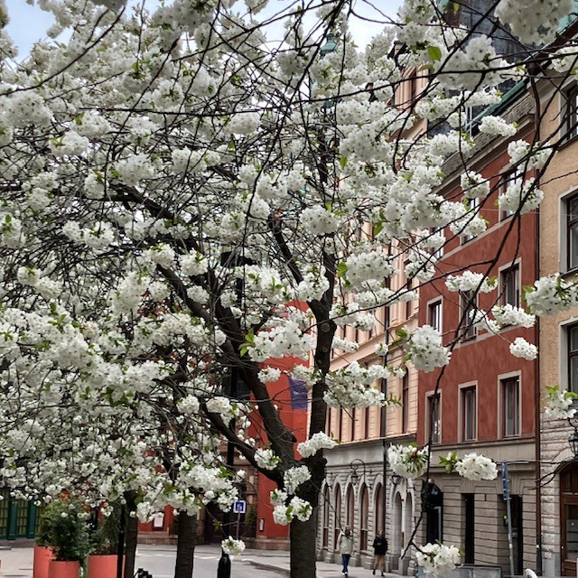

<!DOCTYPE html>
<html>
<head>
    
    <meta http-equiv="content-type" content="text/html; charset=UTF-8" />
    
        <script>
            L_NO_TOUCH = false;
            L_DISABLE_3D = false;
        </script>
    
    <style>html, body {width: 100%;height: 100%;margin: 0;padding: 0;}</style>
    <style>#map {position:absolute;top:0;bottom:0;right:0;left:0;}</style>
    <script src="https://cdn.jsdelivr.net/npm/leaflet@1.9.3/dist/leaflet.js"></script>
    <script src="https://code.jquery.com/jquery-3.7.1.min.js"></script>
    <script src="https://cdn.jsdelivr.net/npm/bootstrap@5.2.2/dist/js/bootstrap.bundle.min.js"></script>
    <script src="https://cdnjs.cloudflare.com/ajax/libs/Leaflet.awesome-markers/2.0.2/leaflet.awesome-markers.js"></script>
    <link rel="stylesheet" href="https://cdn.jsdelivr.net/npm/leaflet@1.9.3/dist/leaflet.css"/>
    <link rel="stylesheet" href="https://cdn.jsdelivr.net/npm/bootstrap@5.2.2/dist/css/bootstrap.min.css"/>
    <link rel="stylesheet" href="https://netdna.bootstrapcdn.com/bootstrap/3.0.0/css/bootstrap-glyphicons.css"/>
    <link rel="stylesheet" href="https://cdn.jsdelivr.net/npm/@fortawesome/fontawesome-free@6.2.0/css/all.min.css"/>
    <link rel="stylesheet" href="https://cdnjs.cloudflare.com/ajax/libs/Leaflet.awesome-markers/2.0.2/leaflet.awesome-markers.css"/>
    <link rel="stylesheet" href="https://cdn.jsdelivr.net/gh/python-visualization/folium/folium/templates/leaflet.awesome.rotate.min.css"/>
    
            <meta name="viewport" content="width=device-width,
                initial-scale=1.0, maximum-scale=1.0, user-scalable=no" />
            <style>
                #map_ccac0833fe4555c5910b4d1b91cade44 {
                    position: relative;
                    width: 100.0%;
                    height: 100.0%;
                    left: 0.0%;
                    top: 0.0%;
                }
                .leaflet-container { font-size: 1rem; }
            </style>
        
    <script src="https://cdnjs.cloudflare.com/ajax/libs/leaflet.markercluster/1.1.0/leaflet.markercluster.js"></script>
    <link rel="stylesheet" href="https://cdnjs.cloudflare.com/ajax/libs/leaflet.markercluster/1.1.0/MarkerCluster.css"/>
    <link rel="stylesheet" href="https://cdnjs.cloudflare.com/ajax/libs/leaflet.markercluster/1.1.0/MarkerCluster.Default.css"/>
</head>
<body>
    
    
<!-- Leaflet LocateControl CSS & JS -->
<link rel="stylesheet" href="https://unpkg.com/leaflet.locatecontrol/dist/L.Control.Locate.min.css" />
<script src="https://unpkg.com/leaflet.locatecontrol/dist/L.Control.Locate.min.js"></script>

<script>
document.addEventListener("DOMContentLoaded", function () {
    var map = window._leaflet_map;

    L.control.locate({
        position: 'topleft',
        strings: {
            title: "Visa min plats"
        },
        locateOptions: {
            enableHighAccuracy: true
        }
    }).addTo(map);
});
</script>
    
<script>
function onLocationFound(e) {
    var radius = e.accuracy / 2;

    var userMarker = L.marker(e.latlng).addTo(window.map)
        .bindPopup("Du är här").openPopup();

    L.circle(e.latlng, radius).addTo(window.map);
}

function onLocationError(e) {
    alert(e.message);
}

window.map.on('locationfound', onLocationFound);
window.map.on('locationerror', onLocationError);
window.map.locate({setView: true, maxZoom: 16});
</script>
    
<script>
document.addEventListener("DOMContentLoaded", function() {
    window.map = window._leaflet_map;
});
</script>
    
            <div class="folium-map" id="map_ccac0833fe4555c5910b4d1b91cade44" ></div>
        
</body>
<script>
    
    
            var map_ccac0833fe4555c5910b4d1b91cade44 = L.map(
                "map_ccac0833fe4555c5910b4d1b91cade44",
                {
                    center: [59.3293, 18.0686],
                    crs: L.CRS.EPSG3857,
                    ...{
  "zoom": 15,
  "zoomControl": true,
  "preferCanvas": false,
}

                }
            );

            

        
    
            var tile_layer_865da0f1e527a8cee266ad0f9c94ba56 = L.tileLayer(
                "https://{s}.basemaps.cartocdn.com/rastertiles/voyager/{z}/{x}/{y}{r}.png",
                {
  "minZoom": 0,
  "maxZoom": 20,
  "maxNativeZoom": 20,
  "noWrap": false,
  "attribution": "CartoDB",
  "subdomains": "abcd",
  "detectRetina": false,
  "tms": false,
  "opacity": 1,
}

            );
        
    
            tile_layer_865da0f1e527a8cee266ad0f9c94ba56.addTo(map_ccac0833fe4555c5910b4d1b91cade44);
        
    
            var marker_cluster_e78f28bec08acda15e2e3a45550f3dd0 = L.markerClusterGroup(
                {
}
            );
        
    
            marker_cluster_e78f28bec08acda15e2e3a45550f3dd0.addTo(map_ccac0833fe4555c5910b4d1b91cade44);
        
    
            var marker_93342d476fd1f582c7b3a2851269c652 = L.marker(
                [59.33210074001757, 18.07150116288134],
                {
}
            ).addTo(map_ccac0833fe4555c5910b4d1b91cade44);
        
    
            var div_icon_eacf8179b41f02fa05274670aeaf5576 = L.divIcon({
  "html": "\n        \u003cdiv style=\"background-color: #91D34C; color: white;\n                        border-radius: 50%; width: 28px; height: 28px;\n                        text-align: center; line-height: 28px;\n                        font-weight: bold;\"\u003e1\u003c/div\u003e\n        ",
  "className": "empty",
});
            marker_93342d476fd1f582c7b3a2851269c652.setIcon(div_icon_eacf8179b41f02fa05274670aeaf5576);
        
    
        var popup_321d3978b045b519a44494a65a273ca4 = L.popup({
  "maxWidth": 320,
});

        
            
                var html_9d80b16619c370776297c872cd7b2f99 = $(`<div id="html_9d80b16619c370776297c872cd7b2f99" style="width: 100.0%; height: 100.0%;">     <div style="max-height: 500px; width: 280px; overflow-y: auto; padding: 10px;">                  <h2 style='margin-bottom: 10px;'>1. Kungsträdgården, vid dammen</h2>         <h4 style='color: darkgreen; margin-top: 0;'>Prydnadskörsbär, Prunus ’Accolade’</h4>         <div style='font-size: 15px; line-height: 1.6; text-align: justify;'>       <div style="font-family: Arial, sans-serif; font-size: 15px; line-height: 1.6; text-align: left;">      Det är inte varje dag man får promenera med huvudet i fluffiga rosa moln. Varje vår blir det en nyhet i hela landet när körsbärsträden i Kungsträdgården blommar. Stockholmare och turister vallfärdar för att fotografera denna blomsterfägring av vackert rosa, halvfyllda blommor i slutet av april.      <p>Körsbärsträden planterades 1998, i dubbla rader på båda sidorna av dammen. Träden är en hybrid mellan bergkörsbär (Prunus sargentii) och vårkörsbär (Prunus subhirtella). Den har en smalare krona i ungdomen men blir bredare med tiden, för att till slut få en nästan flat kronuppbyggnad, där grenarna hänger nedåt.</p>      <p>Andra platser i staden där du kan se prydnadskörsbär är på Luma torg i Hammarby Sjöstad.</p>      </div>      </div>         <div style="margin-top: 10px; display: flex; justify-content: center; gap: 8px; flex-wrap: wrap;">             <audio id="audio1" src="1.m4a"></audio>             <a href="javascript:document.getElementsByClassName('leaflet-marker-icon')[15].click();"               style="background-color: #91D34C; color: white; padding: 8px 12px;                       text-decoration: none; border-radius: 6px; display: inline-block;">               ← Föregående             </a>             <a href="javascript:document.getElementById('audio1').play();"               style="background-color: #FFA500; color: white; padding: 8px 12px;                       text-decoration: none; border-radius: 6px; display: inline-block;">               Lyssna             </a>             <a href="javascript:document.getElementsByClassName('leaflet-marker-icon')[1].click();"               style="background-color: #91D34C; color: white; padding: 8px 12px;                       text-decoration: none; border-radius: 6px; display: inline-block;">               Nästa →             </a>         </div>     </div>     </div>`)[0];
                popup_321d3978b045b519a44494a65a273ca4.setContent(html_9d80b16619c370776297c872cd7b2f99);
            
        

        marker_93342d476fd1f582c7b3a2851269c652.bindPopup(popup_321d3978b045b519a44494a65a273ca4)
        ;

        
    
    
                marker_93342d476fd1f582c7b3a2851269c652.setIcon(div_icon_eacf8179b41f02fa05274670aeaf5576);
            
    
            var marker_c9af33a35a332e3ec3a24c3cfc4984e9 = L.marker(
                [59.33158633411901, 18.07190885862338],
                {
}
            ).addTo(map_ccac0833fe4555c5910b4d1b91cade44);
        
    
            var div_icon_7eb813a6f5596e2e271890a8328e85cf = L.divIcon({
  "html": "\n        \u003cdiv style=\"background-color: #91D34C; color: white;\n                        border-radius: 50%; width: 28px; height: 28px;\n                        text-align: center; line-height: 28px;\n                        font-weight: bold;\"\u003e2\u003c/div\u003e\n        ",
  "className": "empty",
});
            marker_c9af33a35a332e3ec3a24c3cfc4984e9.setIcon(div_icon_7eb813a6f5596e2e271890a8328e85cf);
        
    
        var popup_f9709ee74fbeb23224d80280002f4796 = L.popup({
  "maxWidth": 320,
});

        
            
                var html_8677af6fa1906b5f326f4ec60c0f0969 = $(`<div id="html_8677af6fa1906b5f326f4ec60c0f0969" style="width: 100.0%; height: 100.0%;">     <div style="max-height: 500px; width: 280px; overflow-y: auto; padding: 10px;">                  <h2 style='margin-bottom: 10px;'>2. Kungsträdgården, vid alléerna</h2>         <h4 style='color: darkgreen; margin-top: 0;'>Skogslind, Tilia X cordata ’Rancho’, selektion av skogslind</h4>         <div style='font-size: 15px; line-height: 1.6; text-align: justify;'>       <div style="font-family: Arial, sans-serif; font-size: 15px; line-height: 1.6; text-align: left;">      Lind är det vanligaste trädet på innerstadens gator. Framför allt på grund av esplanadsystemets utbyggnad under slutet av 1800-talet, men även för att det är lättskött och klarar sig ganska bra i staden. I Kungsträdgården står lindarna i två, dubbelradiga alléer på var sida om parken – Jussi Björlings allé och Birgit Nilssons allé. Träden som står där idag planterades 1996 och 2003–2006.      <p>Benämningen cordata syftar till bladens hjärtform. Linden kan under sommaren avge så kallad honungsdagg – ett sekret som utsöndras av löss som suger växtsaft ur bladen.</p>      <p>Andra platser i staden där du kan se skogslind är på trottoaren vid Hammarby allé.</p>      </div>      </div>         <div style="margin-top: 10px; display: flex; justify-content: center; gap: 8px; flex-wrap: wrap;">             <audio id="audio2" src="2.m4a"></audio>             <a href="javascript:document.getElementsByClassName('leaflet-marker-icon')[0].click();"               style="background-color: #91D34C; color: white; padding: 8px 12px;                       text-decoration: none; border-radius: 6px; display: inline-block;">               ← Föregående             </a>             <a href="javascript:document.getElementById('audio2').play();"               style="background-color: #FFA500; color: white; padding: 8px 12px;                       text-decoration: none; border-radius: 6px; display: inline-block;">               Lyssna             </a>             <a href="javascript:document.getElementsByClassName('leaflet-marker-icon')[2].click();"               style="background-color: #91D34C; color: white; padding: 8px 12px;                       text-decoration: none; border-radius: 6px; display: inline-block;">               Nästa →             </a>         </div>     </div>     </div>`)[0];
                popup_f9709ee74fbeb23224d80280002f4796.setContent(html_8677af6fa1906b5f326f4ec60c0f0969);
            
        

        marker_c9af33a35a332e3ec3a24c3cfc4984e9.bindPopup(popup_f9709ee74fbeb23224d80280002f4796)
        ;

        
    
    
                marker_c9af33a35a332e3ec3a24c3cfc4984e9.setIcon(div_icon_7eb813a6f5596e2e271890a8328e85cf);
            
    
            var marker_c1edb6543f805b933e5a52997c6bbb92 = L.marker(
                [59.330464464454856, 18.071962502799966],
                {
}
            ).addTo(map_ccac0833fe4555c5910b4d1b91cade44);
        
    
            var div_icon_22c4f6fbc129ca307215134393fc5522 = L.divIcon({
  "html": "\n        \u003cdiv style=\"background-color: #91D34C; color: white;\n                        border-radius: 50%; width: 28px; height: 28px;\n                        text-align: center; line-height: 28px;\n                        font-weight: bold;\"\u003e3\u003c/div\u003e\n        ",
  "className": "empty",
});
            marker_c1edb6543f805b933e5a52997c6bbb92.setIcon(div_icon_22c4f6fbc129ca307215134393fc5522);
        
    
        var popup_8e9b6d6d43daf42f84717bbd0fe7e398 = L.popup({
  "maxWidth": 320,
});

        
            
                var html_676e0c30eb82514f8dbb74715596b213 = $(`<div id="html_676e0c30eb82514f8dbb74715596b213" style="width: 100.0%; height: 100.0%;">     <div style="max-height: 500px; width: 280px; overflow-y: auto; padding: 10px;">                  <h2 style='margin-bottom: 10px;'>3. Kungsträdgården, vid Tehuset</h2>         <h4 style='color: darkgreen; margin-top: 0;'>Skogsalm, Ulmus gla bra</h4>         <div style='font-size: 15px; line-height: 1.6; text-align: justify;'>       <div style="font-family: Arial, sans-serif; font-size: 15px; line-height: 1.6; text-align: left;">      Almarna är planterade i slutet av 1800-talet som en så kallad boskée, en formellt planterad grupp av träd, ofta i rader eller geometriska mönster, som skapar ett avgränsat rum i en park. Idag står Tehuset i den cirkelformade planteringen. Almen var ett av de vanligaste stadsträden i både park- och gatumiljöer innan den allvarliga typen av almsjukan gjorde sitt intåg.      <p>Almen växer i en vasform, med en tidigt uppsplittrad krona och stora, mörkgröna, asymmetriska, sågade blad. Höstfärgen är gyllengul. De blommar på bar kvist under vårvintern med små blommor.</p>      <p>1971 planerade politikerna i Stockholm att bygga en tunnelbaneuppgång till Kungsträdgårdens tunnelbana precis där almarna står. Det blev stora protester som slutade med att almarna fick stå kvar.</p>      </div>      </div>         <div style="margin-top: 10px; display: flex; justify-content: center; gap: 8px; flex-wrap: wrap;">             <audio id="audio3" src="3.m4a"></audio>             <a href="javascript:document.getElementsByClassName('leaflet-marker-icon')[1].click();"               style="background-color: #91D34C; color: white; padding: 8px 12px;                       text-decoration: none; border-radius: 6px; display: inline-block;">               ← Föregående             </a>             <a href="javascript:document.getElementById('audio3').play();"               style="background-color: #FFA500; color: white; padding: 8px 12px;                       text-decoration: none; border-radius: 6px; display: inline-block;">               Lyssna             </a>             <a href="javascript:document.getElementsByClassName('leaflet-marker-icon')[3].click();"               style="background-color: #91D34C; color: white; padding: 8px 12px;                       text-decoration: none; border-radius: 6px; display: inline-block;">               Nästa →             </a>         </div>     </div>     </div>`)[0];
                popup_8e9b6d6d43daf42f84717bbd0fe7e398.setContent(html_676e0c30eb82514f8dbb74715596b213);
            
        

        marker_c1edb6543f805b933e5a52997c6bbb92.bindPopup(popup_8e9b6d6d43daf42f84717bbd0fe7e398)
        ;

        
    
    
                marker_c1edb6543f805b933e5a52997c6bbb92.setIcon(div_icon_22c4f6fbc129ca307215134393fc5522);
            
    
            var marker_6363e3ab665e89a832d0141b5a32e20e = L.marker(
                [59.33044257393739, 18.069258836239964],
                {
}
            ).addTo(map_ccac0833fe4555c5910b4d1b91cade44);
        
    
            var div_icon_b91cb35763fb2ce7f3e7f4bd052122ce = L.divIcon({
  "html": "\n        \u003cdiv style=\"background-color: #91D34C; color: white;\n                        border-radius: 50%; width: 28px; height: 28px;\n                        text-align: center; line-height: 28px;\n                        font-weight: bold;\"\u003e4\u003c/div\u003e\n        ",
  "className": "empty",
});
            marker_6363e3ab665e89a832d0141b5a32e20e.setIcon(div_icon_b91cb35763fb2ce7f3e7f4bd052122ce);
        
    
        var popup_3fd1095c862061bd6b17e747f9a541c1 = L.popup({
  "maxWidth": 320,
});

        
            
                var html_8a7b4bcc05afec37d414fbbf0c670337 = $(`<div id="html_8a7b4bcc05afec37d414fbbf0c670337" style="width: 100.0%; height: 100.0%;">     <div style="max-height: 500px; width: 280px; overflow-y: auto; padding: 10px;">                  <h2 style='margin-bottom: 10px;'>4. Jakobsgatan vid Hamburger Börs</h2>         <h4 style='color: darkgreen; margin-top: 0;'>Hybridkörsbär, Prunus X gondouinii ’Schnee’</h4>         <div style='font-size: 15px; line-height: 1.6; text-align: justify;'>       <div style="font-family: Arial, sans-serif; font-size: 15px; line-height: 1.6; text-align: left;">      Det här är ett mindre träd med en först konisk, senare brett rundad och slutligen något tillplattad krona. Det har en mycket rik blomning och blommar på bar kvist i början av maj. Blommorna är rent vita och enkla till något fyllda. Höstfärgerna är sprakande, i gult till orangerött. Träden planterades under 1990-talet.      </div>      </div>         <div style="margin-top: 10px; display: flex; justify-content: center; gap: 8px; flex-wrap: wrap;">             <audio id="audio4" src="4.m4a"></audio>             <a href="javascript:document.getElementsByClassName('leaflet-marker-icon')[2].click();"               style="background-color: #91D34C; color: white; padding: 8px 12px;                       text-decoration: none; border-radius: 6px; display: inline-block;">               ← Föregående             </a>             <a href="javascript:document.getElementById('audio4').play();"               style="background-color: #FFA500; color: white; padding: 8px 12px;                       text-decoration: none; border-radius: 6px; display: inline-block;">               Lyssna             </a>             <a href="javascript:document.getElementsByClassName('leaflet-marker-icon')[4].click();"               style="background-color: #91D34C; color: white; padding: 8px 12px;                       text-decoration: none; border-radius: 6px; display: inline-block;">               Nästa →             </a>         </div>     </div>     </div>`)[0];
                popup_3fd1095c862061bd6b17e747f9a541c1.setContent(html_8a7b4bcc05afec37d414fbbf0c670337);
            
        

        marker_6363e3ab665e89a832d0141b5a32e20e.bindPopup(popup_3fd1095c862061bd6b17e747f9a541c1)
        ;

        
    
    
                marker_6363e3ab665e89a832d0141b5a32e20e.setIcon(div_icon_b91cb35763fb2ce7f3e7f4bd052122ce);
            
    
            var marker_50113fb855736cc4b6838b8c6bffeee6 = L.marker(
                [59.33065600579097, 18.068572190779687],
                {
}
            ).addTo(map_ccac0833fe4555c5910b4d1b91cade44);
        
    
            var div_icon_c0e3f85dfe0bd24f138d1dd629dacbfa = L.divIcon({
  "html": "\n        \u003cdiv style=\"background-color: #91D34C; color: white;\n                        border-radius: 50%; width: 28px; height: 28px;\n                        text-align: center; line-height: 28px;\n                        font-weight: bold;\"\u003e5\u003c/div\u003e\n        ",
  "className": "empty",
});
            marker_50113fb855736cc4b6838b8c6bffeee6.setIcon(div_icon_c0e3f85dfe0bd24f138d1dd629dacbfa);
        
    
        var popup_15775f2d385997fb2ed409bfda6f6289 = L.popup({
  "maxWidth": 320,
});

        
            
                var html_d2408c7ac283a6d8b862f14cd235305b = $(`<div id="html_d2408c7ac283a6d8b862f14cd235305b" style="width: 100.0%; height: 100.0%;">     <div style="max-height: 500px; width: 280px; overflow-y: auto; padding: 10px;">                  <h2 style='margin-bottom: 10px;'>5. Regeringsgatan, mittemot Gallerian</h2>         <h4 style='color: darkgreen; margin-top: 0;'>Mannaask, Fraxinus ornus</h4>         <div style='font-size: 15px; line-height: 1.6; text-align: justify;'>       <div style="font-family: Arial, sans-serif; font-size: 15px; line-height: 1.6; text-align: left;">      I de upphöjda betongkaren på Regeringsgatan planterades mannaaskar i mitten av 1970-talet. Detta lilla och långsamt växande träd har en god förmåga att klara av knappa förhållanden och är friskt grön i färgen. Kronan är samlad och har en rund till oval form. Höstfärgen är gul. I juni blommar träden generöst med vita plymer. Den kåda som utvinns ur träden i odlingar i Sydeuropa används som ett laxermedel, och skiljer sig från den manna som omnämns i andra sammanhang.      <p>Andra platser i staden där du kan se mannaask är på Brunkebergstorg vid Riksbanken och på Mäster Samuelsgatan.</p>      </div>      </div>         <div style="margin-top: 10px; display: flex; justify-content: center; gap: 8px; flex-wrap: wrap;">             <audio id="audio5" src="5.m4a"></audio>             <a href="javascript:document.getElementsByClassName('leaflet-marker-icon')[3].click();"               style="background-color: #91D34C; color: white; padding: 8px 12px;                       text-decoration: none; border-radius: 6px; display: inline-block;">               ← Föregående             </a>             <a href="javascript:document.getElementById('audio5').play();"               style="background-color: #FFA500; color: white; padding: 8px 12px;                       text-decoration: none; border-radius: 6px; display: inline-block;">               Lyssna             </a>             <a href="javascript:document.getElementsByClassName('leaflet-marker-icon')[5].click();"               style="background-color: #91D34C; color: white; padding: 8px 12px;                       text-decoration: none; border-radius: 6px; display: inline-block;">               Nästa →             </a>         </div>     </div>     </div>`)[0];
                popup_15775f2d385997fb2ed409bfda6f6289.setContent(html_d2408c7ac283a6d8b862f14cd235305b);
            
        

        marker_50113fb855736cc4b6838b8c6bffeee6.bindPopup(popup_15775f2d385997fb2ed409bfda6f6289)
        ;

        
    
    
                marker_50113fb855736cc4b6838b8c6bffeee6.setIcon(div_icon_c0e3f85dfe0bd24f138d1dd629dacbfa);
            
    
            var marker_227a3c6eeed876807b9c6676c31f5b9c = L.marker(
                [59.330171677731, 18.067939189495995],
                {
}
            ).addTo(map_ccac0833fe4555c5910b4d1b91cade44);
        
    
            var div_icon_2ff8e1a59a5271c791fb58472d8a68a1 = L.divIcon({
  "html": "\n        \u003cdiv style=\"background-color: #91D34C; color: white;\n                        border-radius: 50%; width: 28px; height: 28px;\n                        text-align: center; line-height: 28px;\n                        font-weight: bold;\"\u003e6\u003c/div\u003e\n        ",
  "className": "empty",
});
            marker_227a3c6eeed876807b9c6676c31f5b9c.setIcon(div_icon_2ff8e1a59a5271c791fb58472d8a68a1);
        
    
        var popup_4d00c876d46d3cb0edced46ca581309b = L.popup({
  "maxWidth": 320,
});

        
            
                var html_8472b39c4adad8c0ef2a2fbe373a6ad6 = $(`<div id="html_8472b39c4adad8c0ef2a2fbe373a6ad6" style="width: 100.0%; height: 100.0%;">     <div style="max-height: 500px; width: 280px; overflow-y: auto; padding: 10px;">                  <h2 style='margin-bottom: 10px;'>6. Jakobsgatan, utanför Gallerian</h2>         <h4 style='color: darkgreen; margin-top: 0;'>Kärrek, Quercus palustris</h4>         <div style='font-size: 15px; line-height: 1.6; text-align: justify;'>       <div style="font-family: Arial, sans-serif; font-size: 15px; line-height: 1.6; text-align: left;">      Unga kärrekar har en spikrak, genomgående stam och en konisk kronform. Med tiden breder kronan ut sig och de nedersta grenarna får ett hängande växtsätt. Bladen är djupflikiga och klargrönt glänsande, och får vackra höstfärger. Träden producerar rikligt med ekollon.      <p>Kärrekarna på Jakobsgatan planterades under slutet av 1990-talet.</p>      <p>Andra platser i staden där du kan hitta kärrek är på Eastmanvägen och Olivecronas väg i Sabbatsbergsområdet, där kärrekarna växer så det knakar. Du kan också se kärrekar i Järnvägsparken, bredvid Tegelbacken. De träden har flyttats från Malmtorgsgatan och står i en grupp om fem träd och en solitärt. I Kista dominerar kärreken bland gatuträden.</p>      </div>      </div>         <div style="margin-top: 10px; display: flex; justify-content: center; gap: 8px; flex-wrap: wrap;">             <audio id="audio6" src="6.m4a"></audio>             <a href="javascript:document.getElementsByClassName('leaflet-marker-icon')[4].click();"               style="background-color: #91D34C; color: white; padding: 8px 12px;                       text-decoration: none; border-radius: 6px; display: inline-block;">               ← Föregående             </a>             <a href="javascript:document.getElementById('audio6').play();"               style="background-color: #FFA500; color: white; padding: 8px 12px;                       text-decoration: none; border-radius: 6px; display: inline-block;">               Lyssna             </a>             <a href="javascript:document.getElementsByClassName('leaflet-marker-icon')[6].click();"               style="background-color: #91D34C; color: white; padding: 8px 12px;                       text-decoration: none; border-radius: 6px; display: inline-block;">               Nästa →             </a>         </div>     </div>     </div>`)[0];
                popup_4d00c876d46d3cb0edced46ca581309b.setContent(html_8472b39c4adad8c0ef2a2fbe373a6ad6);
            
        

        marker_227a3c6eeed876807b9c6676c31f5b9c.bindPopup(popup_4d00c876d46d3cb0edced46ca581309b)
        ;

        
    
    
                marker_227a3c6eeed876807b9c6676c31f5b9c.setIcon(div_icon_2ff8e1a59a5271c791fb58472d8a68a1);
            
    
            var marker_aaf1ebee61a1c7f7be9f23cf7955ee59 = L.marker(
                [59.33005948775691, 18.067386654418506],
                {
}
            ).addTo(map_ccac0833fe4555c5910b4d1b91cade44);
        
    
            var div_icon_1ad3efc041995b406796ddd033bf735f = L.divIcon({
  "html": "\n        \u003cdiv style=\"background-color: #91D34C; color: white;\n                        border-radius: 50%; width: 28px; height: 28px;\n                        text-align: center; line-height: 28px;\n                        font-weight: bold;\"\u003e7\u003c/div\u003e\n        ",
  "className": "empty",
});
            marker_aaf1ebee61a1c7f7be9f23cf7955ee59.setIcon(div_icon_1ad3efc041995b406796ddd033bf735f);
        
    
        var popup_180bfbdd737781520ab3c39ab1f207e2 = L.popup({
  "maxWidth": 320,
});

        
            
                var html_51ed532a5d7c8739d99868fad102b820 = $(`<div id="html_51ed532a5d7c8739d99868fad102b820" style="width: 100.0%; height: 100.0%;">     <div style="max-height: 500px; width: 280px; overflow-y: auto; padding: 10px;">                  <h2 style='margin-bottom: 10px;'>7. Jakobsgatan, korsningen Malmtorgsgatan</h2>         <h4 style='color: darkgreen; margin-top: 0;'>Papegojbuske, Parrotia persica</h4>         <div style='font-size: 15px; line-height: 1.6; text-align: justify;'>       <div style="font-family: Arial, sans-serif; font-size: 15px; line-height: 1.6; text-align: left;">      Papegojbusken är trots sitt namn egentligen ett mindre träd, som kan bli upp till tio meter högt. Dessa träd får en fantastisk höstfärg i orange, rött och lila. Finast färger får trädet på en varm växtplats och efter en varm sommar.      <p>Träden planterades 2019.</p>      <p>Andra platser i staden där du kan se papegojbuske är på Medevigatan och Luntmakargatan.</p>      </div>      </div>         <div style="margin-top: 10px; display: flex; justify-content: center; gap: 8px; flex-wrap: wrap;">             <audio id="audio7" src="7.m4a"></audio>             <a href="javascript:document.getElementsByClassName('leaflet-marker-icon')[5].click();"               style="background-color: #91D34C; color: white; padding: 8px 12px;                       text-decoration: none; border-radius: 6px; display: inline-block;">               ← Föregående             </a>             <a href="javascript:document.getElementById('audio7').play();"               style="background-color: #FFA500; color: white; padding: 8px 12px;                       text-decoration: none; border-radius: 6px; display: inline-block;">               Lyssna             </a>             <a href="javascript:document.getElementsByClassName('leaflet-marker-icon')[7].click();"               style="background-color: #91D34C; color: white; padding: 8px 12px;                       text-decoration: none; border-radius: 6px; display: inline-block;">               Nästa →             </a>         </div>     </div>     </div>`)[0];
                popup_180bfbdd737781520ab3c39ab1f207e2.setContent(html_51ed532a5d7c8739d99868fad102b820);
            
        

        marker_aaf1ebee61a1c7f7be9f23cf7955ee59.bindPopup(popup_180bfbdd737781520ab3c39ab1f207e2)
        ;

        
    
    
                marker_aaf1ebee61a1c7f7be9f23cf7955ee59.setIcon(div_icon_1ad3efc041995b406796ddd033bf735f);
            
    
            var marker_bb159b0ede9d19bfb9861d009892767d = L.marker(
                [59.33027839467252, 18.067145255623878],
                {
}
            ).addTo(map_ccac0833fe4555c5910b4d1b91cade44);
        
    
            var div_icon_d8bae7a007fe5ae9f161191fca7d1cbc = L.divIcon({
  "html": "\n        \u003cdiv style=\"background-color: #91D34C; color: white;\n                        border-radius: 50%; width: 28px; height: 28px;\n                        text-align: center; line-height: 28px;\n                        font-weight: bold;\"\u003e8\u003c/div\u003e\n        ",
  "className": "empty",
});
            marker_bb159b0ede9d19bfb9861d009892767d.setIcon(div_icon_d8bae7a007fe5ae9f161191fca7d1cbc);
        
    
        var popup_d285b1b8b7c0d070c3c359c26f9a374a = L.popup({
  "maxWidth": 320,
});

        
            
                var html_c7ee6d95c4bafcc76a2fa67d9d818bc7 = $(`<div id="html_c7ee6d95c4bafcc76a2fa67d9d818bc7" style="width: 100.0%; height: 100.0%;">     <div style="max-height: 500px; width: 280px; overflow-y: auto; padding: 10px;">                  <h2 style='margin-bottom: 10px;'>8. Malmtorgsgatans östra sida</h2>         <h4 style='color: darkgreen; margin-top: 0;'>Magnolia ’Galaxy’</h4>         <div style='font-size: 15px; line-height: 1.6; text-align: justify;'>Denna magnolia blommar med stora rosaröda blommor.</div>         <div style="margin-top: 10px; display: flex; justify-content: center; gap: 8px; flex-wrap: wrap;">             <audio id="audio8" src="8.m4a"></audio>             <a href="javascript:document.getElementsByClassName('leaflet-marker-icon')[6].click();"               style="background-color: #91D34C; color: white; padding: 8px 12px;                       text-decoration: none; border-radius: 6px; display: inline-block;">               ← Föregående             </a>             <a href="javascript:document.getElementById('audio8').play();"               style="background-color: #FFA500; color: white; padding: 8px 12px;                       text-decoration: none; border-radius: 6px; display: inline-block;">               Lyssna             </a>             <a href="javascript:document.getElementsByClassName('leaflet-marker-icon')[8].click();"               style="background-color: #91D34C; color: white; padding: 8px 12px;                       text-decoration: none; border-radius: 6px; display: inline-block;">               Nästa →             </a>         </div>     </div>     </div>`)[0];
                popup_d285b1b8b7c0d070c3c359c26f9a374a.setContent(html_c7ee6d95c4bafcc76a2fa67d9d818bc7);
            
        

        marker_bb159b0ede9d19bfb9861d009892767d.bindPopup(popup_d285b1b8b7c0d070c3c359c26f9a374a)
        ;

        
    
    
                marker_bb159b0ede9d19bfb9861d009892767d.setIcon(div_icon_d8bae7a007fe5ae9f161191fca7d1cbc);
            
    
            var marker_231e8df8ed05c8a8ab10ea967b6b3900 = L.marker(
                [59.331404574038345, 18.06636320377362],
                {
}
            ).addTo(map_ccac0833fe4555c5910b4d1b91cade44);
        
    
            var div_icon_a0f29a1460f86f9902997ac154166b3f = L.divIcon({
  "html": "\n        \u003cdiv style=\"background-color: #91D34C; color: white;\n                        border-radius: 50%; width: 28px; height: 28px;\n                        text-align: center; line-height: 28px;\n                        font-weight: bold;\"\u003e9\u003c/div\u003e\n        ",
  "className": "empty",
});
            marker_231e8df8ed05c8a8ab10ea967b6b3900.setIcon(div_icon_a0f29a1460f86f9902997ac154166b3f);
        
    
        var popup_6a1f7847d24d545204ab6309d9dd42c7 = L.popup({
  "maxWidth": 320,
});

        
            
                var html_4261f1baf6afc567cad909541b24f0ae = $(`<div id="html_4261f1baf6afc567cad909541b24f0ae" style="width: 100.0%; height: 100.0%;">     <div style="max-height: 500px; width: 280px; overflow-y: auto; padding: 10px;">                  <h2 style='margin-bottom: 10px;'>9. Brunkebergstorg</h2>         <h4 style='color: darkgreen; margin-top: 0;'>Magnolia</h4>         <div style='font-size: 15px; line-height: 1.6; text-align: justify;'>       <div style="font-family: Arial, sans-serif; font-size: 15px; line-height: 1.6; text-align: left;">      År 2017 rustade staden upp Brunkebergstorg i samarbete med fastighetsägare för att skapa en bättre mötesplats mitt i city. Platsen är belagd med granithällar och i de upphöjda terrazzocirklarna planterades en blandning av magnolior med olika karaktär.      <p>Wada’s Memory är en hybrid mellan japansk magnolia (Magnolia kobus) och pilbladig magnolia (Magnolia salicifolia). Den blommar med stora, helvita blommor och har blomblad som hänger nedåt.</p>      <p>Rosenmagnolia ’Heaven scent’ är en kulturhybrid mellan yunanmagnolia (Magnolia denudata) och liljemagnolian (Magnolia liliflora). Den blommar med doftande, rosaröda blommor.</p>      <p>Biondi är en av de tidigast blommande magnoliorna. Den får vita blommor med rosa inslag.</p>      </div>      </div>         <div style="margin-top: 10px; display: flex; justify-content: center; gap: 8px; flex-wrap: wrap;">             <audio id="audio9" src="9.m4a"></audio>             <a href="javascript:document.getElementsByClassName('leaflet-marker-icon')[7].click();"               style="background-color: #91D34C; color: white; padding: 8px 12px;                       text-decoration: none; border-radius: 6px; display: inline-block;">               ← Föregående             </a>             <a href="javascript:document.getElementById('audio9').play();"               style="background-color: #FFA500; color: white; padding: 8px 12px;                       text-decoration: none; border-radius: 6px; display: inline-block;">               Lyssna             </a>             <a href="javascript:document.getElementsByClassName('leaflet-marker-icon')[9].click();"               style="background-color: #91D34C; color: white; padding: 8px 12px;                       text-decoration: none; border-radius: 6px; display: inline-block;">               Nästa →             </a>         </div>     </div>     </div>`)[0];
                popup_6a1f7847d24d545204ab6309d9dd42c7.setContent(html_4261f1baf6afc567cad909541b24f0ae);
            
        

        marker_231e8df8ed05c8a8ab10ea967b6b3900.bindPopup(popup_6a1f7847d24d545204ab6309d9dd42c7)
        ;

        
    
    
                marker_231e8df8ed05c8a8ab10ea967b6b3900.setIcon(div_icon_a0f29a1460f86f9902997ac154166b3f);
            
    
            var marker_48c85cb96154c7ed3e8880dde34b0654 = L.marker(
                [59.33169296794744, 18.06512278247012],
                {
}
            ).addTo(map_ccac0833fe4555c5910b4d1b91cade44);
        
    
            var div_icon_ad8ac610074489b4e7153bb3b1004a99 = L.divIcon({
  "html": "\n        \u003cdiv style=\"background-color: #91D34C; color: white;\n                        border-radius: 50%; width: 28px; height: 28px;\n                        text-align: center; line-height: 28px;\n                        font-weight: bold;\"\u003e10\u003c/div\u003e\n        ",
  "className": "empty",
});
            marker_48c85cb96154c7ed3e8880dde34b0654.setIcon(div_icon_ad8ac610074489b4e7153bb3b1004a99);
        
    
        var popup_74f723058edb815bc8f95647108693b5 = L.popup({
  "maxWidth": 320,
});

        
            
                var html_31eeb8d3cb8917171e8386a0fd1ab183 = $(`<div id="html_31eeb8d3cb8917171e8386a0fd1ab183" style="width: 100.0%; height: 100.0%;">     <div style="max-height: 500px; width: 280px; overflow-y: auto; padding: 10px;">                  <h2 style='margin-bottom: 10px;'>10. Benny Fredrikssons torg</h2>         <h4 style='color: darkgreen; margin-top: 0;'>Turkisk trädhassel, Corylus colurna</h4>         <div style='font-size: 15px; line-height: 1.6; text-align: justify;'>       <div style="font-family: Arial, sans-serif; font-size: 15px; line-height: 1.6; text-align: left;">      I den upphöjda rundeln mellan Kulturhuset och Riksbanken planterades på 1990-talet en turkisk trädhassel. Trädet har äggrunda, svagt flikade, ljusgröna blad och en tydligt genomgående stam med flagig bark. Under vintern pryds det av dekorativa hanhängen och små röda honblommor. Nötterna är ganska stora och sitter samlade i stora, fransiga buketter.      <p>Du kan också hitta turkisk trädhassel på Sankt Göransgatan. Förskolor i det området har rapporterat att uppspelta ekorrar plockar hasselnötter av träden.</p>      </div>      </div>         <div style="margin-top: 10px; display: flex; justify-content: center; gap: 8px; flex-wrap: wrap;">             <audio id="audio10" src="10.m4a"></audio>             <a href="javascript:document.getElementsByClassName('leaflet-marker-icon')[8].click();"               style="background-color: #91D34C; color: white; padding: 8px 12px;                       text-decoration: none; border-radius: 6px; display: inline-block;">               ← Föregående             </a>             <a href="javascript:document.getElementById('audio10').play();"               style="background-color: #FFA500; color: white; padding: 8px 12px;                       text-decoration: none; border-radius: 6px; display: inline-block;">               Lyssna             </a>             <a href="javascript:document.getElementsByClassName('leaflet-marker-icon')[10].click();"               style="background-color: #91D34C; color: white; padding: 8px 12px;                       text-decoration: none; border-radius: 6px; display: inline-block;">               Nästa →             </a>         </div>     </div>     </div>`)[0];
                popup_74f723058edb815bc8f95647108693b5.setContent(html_31eeb8d3cb8917171e8386a0fd1ab183);
            
        

        marker_48c85cb96154c7ed3e8880dde34b0654.bindPopup(popup_74f723058edb815bc8f95647108693b5)
        ;

        
    
    
                marker_48c85cb96154c7ed3e8880dde34b0654.setIcon(div_icon_ad8ac610074489b4e7153bb3b1004a99);
            
    
            var marker_ed8a0b24f86646b5c5cc8539852bd898 = L.marker(
                [59.331985008098364, 18.061241672472264],
                {
}
            ).addTo(map_ccac0833fe4555c5910b4d1b91cade44);
        
    
            var div_icon_b26395555dd346a152f452b833f6b9d8 = L.divIcon({
  "html": "\n        \u003cdiv style=\"background-color: #91D34C; color: white;\n                        border-radius: 50%; width: 28px; height: 28px;\n                        text-align: center; line-height: 28px;\n                        font-weight: bold;\"\u003e11\u003c/div\u003e\n        ",
  "className": "empty",
});
            marker_ed8a0b24f86646b5c5cc8539852bd898.setIcon(div_icon_b26395555dd346a152f452b833f6b9d8);
        
    
        var popup_4639cdfa4511a6a0db0cb0b70f2781a6 = L.popup({
  "maxWidth": 320,
});

        
            
                var html_312f74791faf8e5e282a5af6061d239a = $(`<div id="html_312f74791faf8e5e282a5af6061d239a" style="width: 100.0%; height: 100.0%;">     <div style="max-height: 500px; width: 280px; overflow-y: auto; padding: 10px;">                  <h2 style='margin-bottom: 10px;'>11. Klarabergsviadukten, utanför Åhléns</h2>         <h4 style='color: darkgreen; margin-top: 0;'>Kinesträd, Koelreuteria paniculata</h4>         <div style='font-size: 15px; line-height: 1.6; text-align: justify;'>       <div style="font-family: Arial, sans-serif; font-size: 15px; line-height: 1.6; text-align: left;">      Kinesträden på Klarabergsviadukten är några av de träd som staden får flest frågor kring. Det är många förbipasserande som nyfiket undrar vad det är för slags träd.      <p>Tidigare stod det lindar på platsen men som inte trivdes alls. De mycket ledsna träden såg ut som att de hade gått en rond med en torktumlare. Det är inte särskilt förvånande då platsen inte gav lindarna några vidare förutsättningar. Det är en varm plats i staden och träden hade ytterst begränsat med rotutrymme i underjordiska lådor, ovanpå tunnelbanans tak.</p>      <p>Kinesträden hamnade här i omgångar efter att tätskiktet till tunnelbanan renoverades i mitten av 2010-talet. Det är ett mindre träd, som kan bli fem till åtta meter högt. En utmaning har varit att hitta fina exemplar som stamträd i plantskolan. Dels för att träden är fröförökade och dels för att de verkar föredra att växa som en buske.</p>      <p>Bladen är vanligen parbladiga och cirka 30 centimeter långa med bronsfärgat lövutspring, och blir sedan mörkgröna. Höstfärgen är brungul till orange. De blommar sent, under juli–augusti, med gula plymer. Träden får frukter under september som dekorativt sitter kvar i träden som kinesiska lyktor. Trädet är ljuskrävande och gillar varma platser.</p>      <p>Andra platser i staden där du kan hitta kinesträd är på Magnus Ladulåsgatan och snart även vid Slussen. Vill man resa lite längre bort finns de på Friisgatan i Malmö och i Dresden i Tyskland.</p>      </div>      </div>         <div style="margin-top: 10px; display: flex; justify-content: center; gap: 8px; flex-wrap: wrap;">             <audio id="audio11" src="11.m4a"></audio>             <a href="javascript:document.getElementsByClassName('leaflet-marker-icon')[9].click();"               style="background-color: #91D34C; color: white; padding: 8px 12px;                       text-decoration: none; border-radius: 6px; display: inline-block;">               ← Föregående             </a>             <a href="javascript:document.getElementById('audio11').play();"               style="background-color: #FFA500; color: white; padding: 8px 12px;                       text-decoration: none; border-radius: 6px; display: inline-block;">               Lyssna             </a>             <a href="javascript:document.getElementsByClassName('leaflet-marker-icon')[11].click();"               style="background-color: #91D34C; color: white; padding: 8px 12px;                       text-decoration: none; border-radius: 6px; display: inline-block;">               Nästa →             </a>         </div>     </div>     </div>`)[0];
                popup_4639cdfa4511a6a0db0cb0b70f2781a6.setContent(html_312f74791faf8e5e282a5af6061d239a);
            
        

        marker_ed8a0b24f86646b5c5cc8539852bd898.bindPopup(popup_4639cdfa4511a6a0db0cb0b70f2781a6)
        ;

        
    
    
                marker_ed8a0b24f86646b5c5cc8539852bd898.setIcon(div_icon_b26395555dd346a152f452b833f6b9d8);
            
    
            var marker_cfd03a48ae22bac78ec4de50bccf2ff5 = L.marker(
                [59.331454241393075, 18.0599490761384],
                {
}
            ).addTo(map_ccac0833fe4555c5910b4d1b91cade44);
        
    
            var div_icon_e6607895863a7685b028f8f4b7a50b55 = L.divIcon({
  "html": "\n        \u003cdiv style=\"background-color: #91D34C; color: white;\n                        border-radius: 50%; width: 28px; height: 28px;\n                        text-align: center; line-height: 28px;\n                        font-weight: bold;\"\u003e12\u003c/div\u003e\n        ",
  "className": "empty",
});
            marker_cfd03a48ae22bac78ec4de50bccf2ff5.setIcon(div_icon_e6607895863a7685b028f8f4b7a50b55);
        
    
        var popup_fed9876bad63e79b7ac4563924edec62 = L.popup({
  "maxWidth": 320,
});

        
            
                var html_a2c0405893951ff2527f9b8bf704ea43 = $(`<div id="html_a2c0405893951ff2527f9b8bf704ea43" style="width: 100.0%; height: 100.0%;">     <div style="max-height: 500px; width: 280px; overflow-y: auto; padding: 10px;">                  <h2 style='margin-bottom: 10px;'>12. Klara västra kyrkogata</h2>         <h4 style='color: darkgreen; margin-top: 0;'>Korstörne, Gleditsia triacanthos f. inermis</h4>         <div style='font-size: 15px; line-height: 1.6; text-align: justify;'>       <div style="font-family: Arial, sans-serif; font-size: 15px; line-height: 1.6; text-align: left;">      Utformningen på platsen flörtar lite med miniparken Paley park i New York där en dunge ljusgrön korstörne står insprängd mellan skyskraporna.      <p>Korstörnet är en värmegynnad och ljusälskande pionjärart och ett av de vanligaste gatuträden i östra USA. De beskrivs ibland som ”torgträd”, det vill säga träd som får blad lite senare på året. Träden skymmer därför inte vårsolen, samtidigt som ett skirt lövverk senare ger en behaglig skugga under högsommaren.</p>      <p>Under hösten får träden fina, gula höstfärger och dekorativa ärtskidor som kan sitta kvar när träden är avlövade. ”Inermis” är latin för obeväpnad, vilket innebär att de här träden inte har de spetsiga och vassa utskott, så kallade tornar, som skyddar mot betande djur och som torde vara varje arborists mardröm.</p>      </div>      </div>         <div style="margin-top: 10px; display: flex; justify-content: center; gap: 8px; flex-wrap: wrap;">             <audio id="audio12" src="12.m4a"></audio>             <a href="javascript:document.getElementsByClassName('leaflet-marker-icon')[10].click();"               style="background-color: #91D34C; color: white; padding: 8px 12px;                       text-decoration: none; border-radius: 6px; display: inline-block;">               ← Föregående             </a>             <a href="javascript:document.getElementById('audio12').play();"               style="background-color: #FFA500; color: white; padding: 8px 12px;                       text-decoration: none; border-radius: 6px; display: inline-block;">               Lyssna             </a>             <a href="javascript:document.getElementsByClassName('leaflet-marker-icon')[12].click();"               style="background-color: #91D34C; color: white; padding: 8px 12px;                       text-decoration: none; border-radius: 6px; display: inline-block;">               Nästa →             </a>         </div>     </div>     </div>`)[0];
                popup_fed9876bad63e79b7ac4563924edec62.setContent(html_a2c0405893951ff2527f9b8bf704ea43);
            
        

        marker_cfd03a48ae22bac78ec4de50bccf2ff5.bindPopup(popup_fed9876bad63e79b7ac4563924edec62)
        ;

        
    
    
                marker_cfd03a48ae22bac78ec4de50bccf2ff5.setIcon(div_icon_e6607895863a7685b028f8f4b7a50b55);
            
    
            var marker_a2ded8998349216723de586e77e70747 = L.marker(
                [59.33063625281176, 18.059503681850124],
                {
}
            ).addTo(map_ccac0833fe4555c5910b4d1b91cade44);
        
    
            var div_icon_810f7ed440c7c2504870565cfdbc004a = L.divIcon({
  "html": "\n        \u003cdiv style=\"background-color: #91D34C; color: white;\n                        border-radius: 50%; width: 28px; height: 28px;\n                        text-align: center; line-height: 28px;\n                        font-weight: bold;\"\u003e13\u003c/div\u003e\n        ",
  "className": "empty",
});
            marker_a2ded8998349216723de586e77e70747.setIcon(div_icon_810f7ed440c7c2504870565cfdbc004a);
        
    
        var popup_48774a43d6dc872d8dbc38799f4093cc = L.popup({
  "maxWidth": 320,
});

        
            
                var html_08edda958ef1c48cb57511d323e0340b = $(`<div id="html_08edda958ef1c48cb57511d323e0340b" style="width: 100.0%; height: 100.0%;">     <div style="max-height: 500px; width: 280px; overflow-y: auto; padding: 10px;">                  <h2 style='margin-bottom: 10px;'>13. Vasagatan, mittemot Centralstationen</h2>         <h4 style='color: darkgreen; margin-top: 0;'>Japansk zelkova, Zelkova serrata</h4>         <div style='font-size: 15px; line-height: 1.6; text-align: justify;'>       <div style="font-family: Arial, sans-serif; font-size: 15px; line-height: 1.6; text-align: left;">      Vasagatan rustades upp 2018–2021 och fick då bredare trottoarer, cykelbanor och nya trädplanteringar.      <p>Zelkovan tillhör almfamiljen och har stora likheter med denna. Växtsättet är brett vasformigt. Bladen är mörkgröna, utdragna med sågade kanter. Höstfärgerna är roströda. De har en slät stam som med tiden spricker upp i dekorativa plattor.</p>      <p>Andra platser i staden där du kan hitta zelkova är vid korsningen Rådmansgatan och Birger Jarlsgatan.</p>      </div>      </div>         <div style="margin-top: 10px; display: flex; justify-content: center; gap: 8px; flex-wrap: wrap;">             <audio id="audio13" src="13.m4a"></audio>             <a href="javascript:document.getElementsByClassName('leaflet-marker-icon')[11].click();"               style="background-color: #91D34C; color: white; padding: 8px 12px;                       text-decoration: none; border-radius: 6px; display: inline-block;">               ← Föregående             </a>             <a href="javascript:document.getElementById('audio13').play();"               style="background-color: #FFA500; color: white; padding: 8px 12px;                       text-decoration: none; border-radius: 6px; display: inline-block;">               Lyssna             </a>             <a href="javascript:document.getElementsByClassName('leaflet-marker-icon')[13].click();"               style="background-color: #91D34C; color: white; padding: 8px 12px;                       text-decoration: none; border-radius: 6px; display: inline-block;">               Nästa →             </a>         </div>     </div>     </div>`)[0];
                popup_48774a43d6dc872d8dbc38799f4093cc.setContent(html_08edda958ef1c48cb57511d323e0340b);
            
        

        marker_a2ded8998349216723de586e77e70747.bindPopup(popup_48774a43d6dc872d8dbc38799f4093cc)
        ;

        
    
    
                marker_a2ded8998349216723de586e77e70747.setIcon(div_icon_810f7ed440c7c2504870565cfdbc004a);
            
    
            var marker_9c7ee39d93f76f9e0b6dfc0eec1112bd = L.marker(
                [59.33202738155008, 18.058277626533595],
                {
}
            ).addTo(map_ccac0833fe4555c5910b4d1b91cade44);
        
    
            var div_icon_8eb5e20ae6fbf63dde975a19fce6a3a0 = L.divIcon({
  "html": "\n        \u003cdiv style=\"background-color: #91D34C; color: white;\n                        border-radius: 50%; width: 28px; height: 28px;\n                        text-align: center; line-height: 28px;\n                        font-weight: bold;\"\u003e14\u003c/div\u003e\n        ",
  "className": "empty",
});
            marker_9c7ee39d93f76f9e0b6dfc0eec1112bd.setIcon(div_icon_8eb5e20ae6fbf63dde975a19fce6a3a0);
        
    
        var popup_f877153953fc51c0ae63e32e75167f29 = L.popup({
  "maxWidth": 320,
});

        
            
                var html_4491e365850834c69ff6ccb0692059a5 = $(`<div id="html_4491e365850834c69ff6ccb0692059a5" style="width: 100.0%; height: 100.0%;">     <div style="max-height: 500px; width: 280px; overflow-y: auto; padding: 10px;">                  <h2 style='margin-bottom: 10px;'>14. Vasagatan, korsningen Mäster Samuelsgatan</h2>         <h4 style='color: darkgreen; margin-top: 0;'>Ambraträd, Liquidambar styraciflua ’Worplesdon’</h4>         <div style='font-size: 15px; line-height: 1.6; text-align: justify;'>       <div style="font-family: Arial, sans-serif; font-size: 15px; line-height: 1.6; text-align: left;">      Trädet kommer ursprungligen från USA, men sorten är en engelsk selektion. I början växer trädet som en pelare för att med tiden få en mer oval form. De har spännande, stjärnformiga blad med utdragna spetsar och djupa flikar. Höstfärgerna kan bli slående i aprikos och orange. Båda orden i namnet syftar till den kåda som kan användas som tuggummi, vilket även har gett trädet dess amerikanska namn, ”Sweetgum”.      </div>      </div>         <div style="margin-top: 10px; display: flex; justify-content: center; gap: 8px; flex-wrap: wrap;">             <audio id="audio14" src="14.m4a"></audio>             <a href="javascript:document.getElementsByClassName('leaflet-marker-icon')[12].click();"               style="background-color: #91D34C; color: white; padding: 8px 12px;                       text-decoration: none; border-radius: 6px; display: inline-block;">               ← Föregående             </a>             <a href="javascript:document.getElementById('audio14').play();"               style="background-color: #FFA500; color: white; padding: 8px 12px;                       text-decoration: none; border-radius: 6px; display: inline-block;">               Lyssna             </a>             <a href="javascript:document.getElementsByClassName('leaflet-marker-icon')[14].click();"               style="background-color: #91D34C; color: white; padding: 8px 12px;                       text-decoration: none; border-radius: 6px; display: inline-block;">               Nästa →             </a>         </div>     </div>     </div>`)[0];
                popup_f877153953fc51c0ae63e32e75167f29.setContent(html_4491e365850834c69ff6ccb0692059a5);
            
        

        marker_9c7ee39d93f76f9e0b6dfc0eec1112bd.bindPopup(popup_f877153953fc51c0ae63e32e75167f29)
        ;

        
    
    
                marker_9c7ee39d93f76f9e0b6dfc0eec1112bd.setIcon(div_icon_8eb5e20ae6fbf63dde975a19fce6a3a0);
            
    
            var marker_9753cf1ba67f4d3adacbea5d208cb07e = L.marker(
                [59.33347646357579, 18.057035321554384],
                {
}
            ).addTo(map_ccac0833fe4555c5910b4d1b91cade44);
        
    
            var div_icon_1fae4a0ae6c5b9463bdee88a223faf3c = L.divIcon({
  "html": "\n        \u003cdiv style=\"background-color: #91D34C; color: white;\n                        border-radius: 50%; width: 28px; height: 28px;\n                        text-align: center; line-height: 28px;\n                        font-weight: bold;\"\u003e15\u003c/div\u003e\n        ",
  "className": "empty",
});
            marker_9753cf1ba67f4d3adacbea5d208cb07e.setIcon(div_icon_1fae4a0ae6c5b9463bdee88a223faf3c);
        
    
        var popup_c49826ee84a01a0375da736797168cf4 = L.popup({
  "maxWidth": 320,
});

        
            
                var html_c2bdfa86b60f1e1035fe55e27de001a4 = $(`<div id="html_c2bdfa86b60f1e1035fe55e27de001a4" style="width: 100.0%; height: 100.0%;">     <div style="max-height: 500px; width: 280px; overflow-y: auto; padding: 10px;">                  <h2 style='margin-bottom: 10px;'>15. Vasagatan, korsningen Gamla Brogata</h2>         <h4 style='color: darkgreen; margin-top: 0;'>Rödask, Fraxinus pensylvanica ’Summit’</h4>         <div style='font-size: 15px; line-height: 1.6; text-align: justify;'>       <div style="font-family: Arial, sans-serif; font-size: 15px; line-height: 1.6; text-align: left;">      Det här trädet är en amerikansk selektion av rödask, med ovalt till rundat växtsätt. Trädet har stora och vackert glänsande, gröna blad med en smörgul höstfärg. Trädet är värmegynnat, torktåligt och tål stadsklimatet.      <p>Andra platser i staden där du kan hitta rödask är på Fredriksdalstorget, där den står i kombination med vitask (Fraxinus americana ’Autumn Purple’), och på Torsgatan.</p>      </div>      </div>         <div style="margin-top: 10px; display: flex; justify-content: center; gap: 8px; flex-wrap: wrap;">             <audio id="audio15" src="15.m4a"></audio>             <a href="javascript:document.getElementsByClassName('leaflet-marker-icon')[13].click();"               style="background-color: #91D34C; color: white; padding: 8px 12px;                       text-decoration: none; border-radius: 6px; display: inline-block;">               ← Föregående             </a>             <a href="javascript:document.getElementById('audio15').play();"               style="background-color: #FFA500; color: white; padding: 8px 12px;                       text-decoration: none; border-radius: 6px; display: inline-block;">               Lyssna             </a>             <a href="javascript:document.getElementsByClassName('leaflet-marker-icon')[15].click();"               style="background-color: #91D34C; color: white; padding: 8px 12px;                       text-decoration: none; border-radius: 6px; display: inline-block;">               Nästa →             </a>         </div>     </div>     </div>`)[0];
                popup_c49826ee84a01a0375da736797168cf4.setContent(html_c2bdfa86b60f1e1035fe55e27de001a4);
            
        

        marker_9753cf1ba67f4d3adacbea5d208cb07e.bindPopup(popup_c49826ee84a01a0375da736797168cf4)
        ;

        
    
    
                marker_9753cf1ba67f4d3adacbea5d208cb07e.setIcon(div_icon_1fae4a0ae6c5b9463bdee88a223faf3c);
            
    
            var marker_ba05bea0d57b0f6f372e93f1a5aecf32 = L.marker(
                [59.33415188448287, 18.05644586312134],
                {
}
            ).addTo(map_ccac0833fe4555c5910b4d1b91cade44);
        
    
            var div_icon_9801bc21e23b25625b694e22a598afcc = L.divIcon({
  "html": "\n        \u003cdiv style=\"background-color: #91D34C; color: white;\n                        border-radius: 50%; width: 28px; height: 28px;\n                        text-align: center; line-height: 28px;\n                        font-weight: bold;\"\u003e16\u003c/div\u003e\n        ",
  "className": "empty",
});
            marker_ba05bea0d57b0f6f372e93f1a5aecf32.setIcon(div_icon_9801bc21e23b25625b694e22a598afcc);
        
    
        var popup_0acca540fb9fc91c2502b66fa715a594 = L.popup({
  "maxWidth": 320,
});

        
            
                var html_1c2c8bdb4235f55c37808e287482ca72 = $(`<div id="html_1c2c8bdb4235f55c37808e287482ca72" style="width: 100.0%; height: 100.0%;">     <div style="max-height: 500px; width: 280px; overflow-y: auto; padding: 10px;">                  <h2 style='margin-bottom: 10px;'>16. Vasagatan, korsningen Kungsgatan</h2>         <h4 style='color: darkgreen; margin-top: 0;'>Berlineral, Alnus X spaethii</h4>         <div style='font-size: 15px; line-height: 1.6; text-align: justify;'>       <div style="font-family: Arial, sans-serif; font-size: 15px; line-height: 1.6; text-align: left;">      I naturen står alar ofta på platser där vattentillgången kan ändras mycket över året, till exempel stränder. Det gör att den är väl anpassad till det hårda klimat som innerstaden innebär. Den visar god tillväxt i växtbäddar uppbyggda med makadam, biokol och kompost. Den här alen är en hybrid mellan japansk al (Alnus japonica) och storbladig al (Alnus subcordata). Berlineralen har en rak, genomgående stam och ett friskt, mörkgrönt bladverk. Tyvärr får den inga höstfärger, utan bladen förblir gröna till dess att de faller av.      <p>Andra platser i staden där du kan se berlineral är på Torsgatan och på Sockenvägen vid Sockenplan.</p>      </div>      </div>         <div style="margin-top: 10px; display: flex; justify-content: center; gap: 8px; flex-wrap: wrap;">             <audio id="audio16" src="16.m4a"></audio>             <a href="javascript:document.getElementsByClassName('leaflet-marker-icon')[14].click();"               style="background-color: #91D34C; color: white; padding: 8px 12px;                       text-decoration: none; border-radius: 6px; display: inline-block;">               ← Föregående             </a>             <a href="javascript:document.getElementById('audio16').play();"               style="background-color: #FFA500; color: white; padding: 8px 12px;                       text-decoration: none; border-radius: 6px; display: inline-block;">               Lyssna             </a>             <a href="javascript:document.getElementsByClassName('leaflet-marker-icon')[0].click();"               style="background-color: #91D34C; color: white; padding: 8px 12px;                       text-decoration: none; border-radius: 6px; display: inline-block;">               Nästa →             </a>         </div>     </div>     </div>`)[0];
                popup_0acca540fb9fc91c2502b66fa715a594.setContent(html_1c2c8bdb4235f55c37808e287482ca72);
            
        

        marker_ba05bea0d57b0f6f372e93f1a5aecf32.bindPopup(popup_0acca540fb9fc91c2502b66fa715a594)
        ;

        
    
    
                marker_ba05bea0d57b0f6f372e93f1a5aecf32.setIcon(div_icon_9801bc21e23b25625b694e22a598afcc);
            
    
            var marker_6e023ccb68be1e31b87373f4f845321e = L.marker(
                [59.33210074001757, 18.07150116288134],
                {
}
            ).addTo(map_ccac0833fe4555c5910b4d1b91cade44);
        
    
            var icon_aaf23b51faeec5dd2b34be519e17892b = L.AwesomeMarkers.icon(
                {
  "markerColor": "blue",
  "iconColor": "white",
  "icon": "info-circle",
  "prefix": "fa",
  "extraClasses": "fa-rotate-0",
}
            );
        
    
        var popup_f9f3bbc1719d584f28d2b45143c1afa4 = L.popup({
  "maxWidth": "100%",
});

        
            
                var html_92b23d13805abb0fce689d23ce885f27 = $(`<div id="html_92b23d13805abb0fce689d23ce885f27" style="width: 100.0%; height: 100.0%;">         <b>Trädpromenaden: från Kungsträdgården till Vasagatan</b><br>         Promenaden är cirka 1,8 kilometer lång och tar ungefär 25 minuter att gå i lugn takt.         Du kan följa hela sträckan eller bara besöka enstaka träd längs vägen.     </div>`)[0];
                popup_f9f3bbc1719d584f28d2b45143c1afa4.setContent(html_92b23d13805abb0fce689d23ce885f27);
            
        

        marker_6e023ccb68be1e31b87373f4f845321e.bindPopup(popup_f9f3bbc1719d584f28d2b45143c1afa4)
        ;

        
    
    
                marker_6e023ccb68be1e31b87373f4f845321e.setIcon(icon_aaf23b51faeec5dd2b34be519e17892b);
            
    
            var marker_5949cc3d66a83f2d9aecbe0eef17a772 = L.marker(
                [59.33415188448287, 18.05644586312134],
                {
}
            ).addTo(map_ccac0833fe4555c5910b4d1b91cade44);
        
    
            var icon_5d354c846b56c080e6e5e2751bc0f941 = L.AwesomeMarkers.icon(
                {
  "markerColor": "red",
  "iconColor": "white",
  "icon": "flag-checkered",
  "prefix": "fa",
  "extraClasses": "fa-rotate-0",
}
            );
        
    
        var popup_3db9042414a539e547fdadf764702188 = L.popup({
  "maxWidth": "100%",
});

        
            
                var html_ba444b69c346cc3d6fd8ad671efcbfa9 = $(`<div id="html_ba444b69c346cc3d6fd8ad671efcbfa9" style="width: 100.0%; height: 100.0%;">Slut: Vasagatan, korsningen Kungsgatan</div>`)[0];
                popup_3db9042414a539e547fdadf764702188.setContent(html_ba444b69c346cc3d6fd8ad671efcbfa9);
            
        

        marker_5949cc3d66a83f2d9aecbe0eef17a772.bindPopup(popup_3db9042414a539e547fdadf764702188)
        ;

        
    
    
                marker_5949cc3d66a83f2d9aecbe0eef17a772.setIcon(icon_5d354c846b56c080e6e5e2751bc0f941);
            
</script>
</html>
